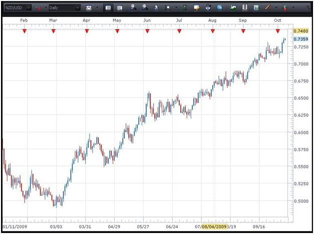

MS
技术分析的基本知识
本节我们将会看看不同类别的图表，交易者可以利用它们来对货币对进行技术分析。
图表类别
技术分析在于观察及诠释图表，以识别出建立交易的最大可能性。
三种最广泛使用的图表类别分别是线型图、柱型图及烛柱图。以下是相关例子。
 线型图
线型图
在上述三类图表中，最基本的是线型图。这是将一系列资料点(例如货币对的收市价)连结成线而制定的。从上例可见，该条线基本上跟随价格行为，因此交易者可以根据所示的过往资料点厘定趋势的方向。通常来说，线型图会用于较长的时间段,以简单快速地判断货币对在指定时间段内有什麽样的走势。
柱型图
柱型图能为交易者提供宝贵的额外资料。现在我们就放大柱型图，集中于一条柱子，以看看它能为我们提供什麽资料。
我们所看的是日图 – 即每一条柱子代表货币对在24小时内的买卖价。特别是，柱子将会显示此货币对于开市时的买卖价、于时间段内所达致的最高及最低价，以及货币对当日的最后买卖价。下图显示了这些资料。
 柱型图
柱型图
(新每日柱子将于美东时间下午5开市，因为对上一条柱子在同一时间收市。)
这里所提供的额外资料可大大帮助交易者。例如，交易者可以得知在此时间段内货币对继续拾级而上，因为收市价高于开市价。
最后，我们将会看看最广为使用的外汇交易图表类型 – 烛柱图。
以下您将会看到烛柱图诠释的基本知识。


只需稍为看看每日烛柱图，交易者便可即时瞭解到使用这种图表相较于线型图及柱型图的优点。根据蜡烛的颜色 – 蓝色代表收市价较开市价为高的看好蜡烛，而红色代表收市价较开市价为低的看澹蜡烛 – 便能明显看出哪些日子有向上动力，及哪些日子有向下动力。
现在仔细看看上图。
您可以看到，烛柱图所提供的资料(最高、最低、开市及收市价)与柱型图所提供的资料相同。然而，当以这种形式表达时，资料便变得一目了然，当中的原因是蜡烛的颜色。
研究任何蜡烛时，即看好蜡烛及看澹蜡烛，烛芯顶部及烛芯底部分别表示货币对在该时间段内的最高及最低价。除了颜色之外，看好蜡烛及看澹蜡烛之间的主要分别是开市及收市价的位置。
由于蓝色蜡烛的收市价高于开市价，烛身顶部就是收市价，而烛身底部就是开市价。就红色看澹蜡烛而言，烛身顶部就是货币对在该时间段内的开市价，而烛身底部就是货币对的收市价 … 即看好蜡烛的相反。
在使用烛柱图时，请紧记，当您使用不同时间段时，每个烛柱图将只代表该个时间段。因此，若您所看的是日图，每支蜡烛代表一日(24小时)。若您所参考的是4小时图，每支蜡烛所代表的是4小时，如此类推。在此处所呈示的三种图表当中，烛柱图以一种最容易一目了然的方式提供所有必要资料。
现在您应该瞭解到这三种主要图表及如何在交易时运用它们。